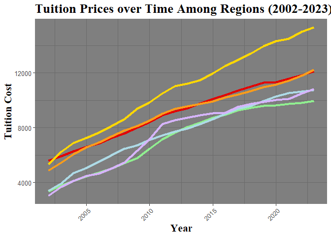

newEngland <- read.csv("4YrPublicNewEngland.csv")
newEngland <- newEngland %>%
filter(Year >= 2002)
national <- read.csv("4YrPublicNational.csv")
national <- national %>%
filter(Year >= 2002)
middle <- read.csv("4YrPublicMiddle.csv")
middle <- middle %>%
filter(Year >= 2002)
midwest <- read.csv("4YrPublicMidwest.csv")
midwest <- midwest %>%
filter(Year >= 2002)
west <- read.csv("4YrPublicWest.csv")
west <- west %>%
filter(Year >= 2002)
south <- read.csv("4YrPublicSouth.csv")
south <- south %>%
filter(Year >= 2002)
southwest <- read.csv("4YrPublicSouthwest.csv")
southwest <- southwest %>%
filter(Year >= 2002)
fourYrPublic <- read.csv("4YrPublicALL.csv")
fourYrPublic <- fourYrPublic %>%
filter(Year >= 2002)
head(fourYrPublic)## Year National MiddleStates Midwest NewEngland South Southwest West
## 1 2002 4100 5590 4890 5350 3380 3400 3030
## 2 2003 4650 5930 5450 6240 3810 3930 3700
## 3 2004 5130 6290 6070 6880 4130 4690 4120
## 4 2005 5490 6600 6570 7260 4430 5040 4470
## 5 2006 5800 6860 6930 7670 4730 5540 4650
## 6 2007 6190 7250 7380 8120 5020 5980 5030#Tuition Prices over Time Among Regions
plot <- ggplot(fourYrPublic, aes(Year)) +
geom_line(aes(y = MiddleStates), color = "#e40000", linetype = "solid", linewidth = 1.5) +
geom_line(aes(y = Midwest), color = "#FA9C1B", linetype = "solid", linewidth = 1.5) +
geom_line(aes(y = NewEngland), color = "#FFD700", linetype = "solid", linewidth = 1.5) +
geom_line(aes(y = South), color = "#90EE90", linetype = "solid", linewidth = 1.5) +
geom_line(aes(y = Southwest), color = "#ADDAE6", linetype = "solid", linewidth = 1.5) +
geom_line(aes(y = West), color = "#D6B4Fc", linetype = "solid", linewidth = 1.5) +
labs(x = "Year", y = "Tuition Cost", title = "Tuition Prices over Time Among Regions (2002-2023)") +
theme_dark() + theme(
text = element_text(family = "sans", size = 12), # Change font to Arial and set size
title = element_text(family = "serif", face = "bold", size = 16), # Change title font
axis.text.x = element_text(family = "sans", angle = 45, hjust = 1), # Change x-axis text font and rotation
axis.text.y = element_text(family = "sans", size = 10), # Change y-axis text font
legend.text = element_text(family = "serif", size = 8) # Change legend text font
)
plot
##
## Call:
## lm(formula = Cost ~ Year, data = national)
##
## Residuals:
## Min 1Q Median 3Q Max
## -566.28 -218.86 -47.16 258.98 597.44
##
## Coefficients:
## Estimate Std. Error t value Pr(>|t|)
## (Intercept) -682196.36 24695.89 -27.62 <2e-16 ***
## Year 343.07 12.27 27.96 <2e-16 ***
## ---
## Signif. codes: 0 '***' 0.001 '**' 0.01 '*' 0.05 '.' 0.1 ' ' 1
##
## Residual standard error: 365.2 on 20 degrees of freedom
## Multiple R-squared: 0.975, Adjusted R-squared: 0.9738
## F-statistic: 781.6 on 1 and 20 DF, p-value: < 2.2e-16##
## Call:
## lm(formula = Cost ~ Year, data = middle)
##
## Residuals:
## Min 1Q Median 3Q Max
## -343.20 -153.43 -38.85 185.56 287.99
##
## Coefficients:
## Estimate Std. Error t value Pr(>|t|)
## (Intercept) -6.334e+05 1.343e+04 -47.15 <2e-16 ***
## Year 3.193e+02 6.675e+00 47.83 <2e-16 ***
## ---
## Signif. codes: 0 '***' 0.001 '**' 0.01 '*' 0.05 '.' 0.1 ' ' 1
##
## Residual standard error: 198.6 on 20 degrees of freedom
## Multiple R-squared: 0.9913, Adjusted R-squared: 0.9909
## F-statistic: 2288 on 1 and 20 DF, p-value: < 2.2e-16##
## Call:
## lm(formula = Cost ~ Year, data = midwest)
##
## Residuals:
## Min 1Q Median 3Q Max
## -734.90 -192.20 -3.87 235.30 519.46
##
## Coefficients:
## Estimate Std. Error t value Pr(>|t|)
## (Intercept) -640147.27 22013.28 -29.08 <2e-16 ***
## Year 322.56 10.94 29.49 <2e-16 ***
## ---
## Signif. codes: 0 '***' 0.001 '**' 0.01 '*' 0.05 '.' 0.1 ' ' 1
##
## Residual standard error: 325.5 on 20 degrees of freedom
## Multiple R-squared: 0.9775, Adjusted R-squared: 0.9764
## F-statistic: 869.6 on 1 and 20 DF, p-value: < 2.2e-16##
## Call:
## lm(formula = Cost ~ Year, data = newEngland)
##
## Residuals:
## Min 1Q Median 3Q Max
## -549.0 -107.8 8.9 116.5 465.1
##
## Coefficients:
## Estimate Std. Error t value Pr(>|t|)
## (Intercept) -9.282e+05 1.607e+04 -57.76 <2e-16 ***
## Year 4.666e+02 7.986e+00 58.43 <2e-16 ***
## ---
## Signif. codes: 0 '***' 0.001 '**' 0.01 '*' 0.05 '.' 0.1 ' ' 1
##
## Residual standard error: 237.6 on 20 degrees of freedom
## Multiple R-squared: 0.9942, Adjusted R-squared: 0.9939
## F-statistic: 3414 on 1 and 20 DF, p-value: < 2.2e-16##
## Call:
## lm(formula = Cost ~ Year, data = south)
##
## Residuals:
## Min 1Q Median 3Q Max
## -903.9 -270.2 -178.3 457.3 614.8
##
## Coefficients:
## Estimate Std. Error t value Pr(>|t|)
## (Intercept) -686712.73 31080.10 -22.09 1.60e-15 ***
## Year 344.83 15.44 22.33 1.31e-15 ***
## ---
## Signif. codes: 0 '***' 0.001 '**' 0.01 '*' 0.05 '.' 0.1 ' ' 1
##
## Residual standard error: 459.6 on 20 degrees of freedom
## Multiple R-squared: 0.9614, Adjusted R-squared: 0.9595
## F-statistic: 498.6 on 1 and 20 DF, p-value: 1.306e-15##
## Call:
## lm(formula = Cost ~ Year, data = southwest)
##
## Residuals:
## Min 1Q Median 3Q Max
## -662.61 -61.24 75.56 177.79 317.71
##
## Coefficients:
## Estimate Std. Error t value Pr(>|t|)
## (Intercept) -6.865e+05 1.866e+04 -36.79 <2e-16 ***
## Year 3.449e+02 9.272e+00 37.20 <2e-16 ***
## ---
## Signif. codes: 0 '***' 0.001 '**' 0.01 '*' 0.05 '.' 0.1 ' ' 1
##
## Residual standard error: 275.9 on 20 degrees of freedom
## Multiple R-squared: 0.9858, Adjusted R-squared: 0.985
## F-statistic: 1384 on 1 and 20 DF, p-value: < 2.2e-16##
## Call:
## lm(formula = Cost ~ Year, data = west)
##
## Residuals:
## Min 1Q Median 3Q Max
## -725.5 -483.9 -221.8 421.8 1226.2
##
## Coefficients:
## Estimate Std. Error t value Pr(>|t|)
## (Intercept) -749050.00 42285.23 -17.71 1.08e-13 ***
## Year 375.97 21.01 17.89 8.93e-14 ***
## ---
## Signif. codes: 0 '***' 0.001 '**' 0.01 '*' 0.05 '.' 0.1 ' ' 1
##
## Residual standard error: 625.2 on 20 degrees of freedom
## Multiple R-squared: 0.9412, Adjusted R-squared: 0.9383
## F-statistic: 320.2 on 1 and 20 DF, p-value: 8.932e-14#Southwest v West
# Null : Southwest = West
# Alternative: Southwest < West
#(beta1_{group1} - beta1_{group2})/sqrt(se(beta1__{group1})^2 + se(beta1_{group2})^2)
t = (344.9 - 375.97) / sqrt((9.272)^2 + (21.01)^2)
t## [1] -1.35293Test Statistic = -1.353
Degrees of Freedom= 20
## [1] 2.867632P-value : 1
Not significantly different
#West vs New England
# Null : West = New England
# Alternative: West < New England
t = (375.97- 466.6) / sqrt((21.01)^2 + (7.986)^2)
t## [1] -4.032198Test Statistic = -4.03
Degrees of Freedom= 20
## [1] 0.009837943P-value = 0.00984
SIGNIFICANTLY DIFFERENT
Therefore we reject the null hypothesis. There is sufficient evidence to support the claim that the West is increasing a statistically lower rate than New England.
# Midwest vs West
# Null :Midwest = West
# Alternative: Midwest < West
t = (322.56 - 375.97) / sqrt((10.94)^2 + (21.01)^2)
t## [1] -2.254764Test Statistic = -2.255
Degrees of Freedom = 20
## [1] 0.5327194P-value = 0.532
Not significantly different
#Southwest vs New England
# Null : Southwest = New England
# Alternative: Southwest < New England
t = (344.9- 466.6) / sqrt((9.272)^2 + (7.986)^2)
t## [1] -9.945181Test Statistic = -9.945
Degrees of Freedom = 20
## [1] 5.204839e-08P-value = 5.205e-08
SIGNIFICANTLY DIFFERENT
Therefore we reject the null hypothesis. There is sufficient evidence to support the claim that the Southwest is increasing a statistically lower rate than New England.
#Midwest vs Southwest
# Null : Midwest = Southwest
# Alternative: Midwest < Southwest
t = (322.56 - 344.9) / sqrt((10.94)^2 + (9.272)^2)
t## [1] -1.557812Test Statistic = -1.56
Degrees of Freedom = 20
## [1] 2.024423P-value = 1
Not significantly different
#South v West
# Null : South = West
# Alternative: South < West
t = (344.83 - 375.97) / sqrt((15.44)^2 + (21.01)^2)
t## [1] -1.194328Test Statistic = -1.194
Degrees of Freedom = 20
## [1] 3.694838P-value = 1
Not significantly different
#South vs Southwest
# Null : South = Southwest
# Alternative: South < Southwest
t = (344.83 - 344.9) / sqrt((9.272)^2 + (15.44)^2)
t## [1] -0.003886709Test Statistic = -0.00389
Degrees of Freedom = 20
## [1] 14.95406P-value = 1
Not significantly different
#South vs New England
# Null : South = New England
# Alternative: South < New England
t = (344.83- 466.6) / sqrt((15.44)^2 + (7.986)^2)
t## [1] -7.005107Test Statistic = -7.005
Degrees of Freedom = 20
## [1] 1.276147e-05P-value = 1.276e-05
SIGNIFICANTLY DIFFERENT
Therefore we reject the null hypothesis. There is sufficient evidence to support the claim that the South is increasing a statistically lower rate than New England.
#Midwest vs South
# Null : Midwest = South
# Alternative: Midwest < South
t = (322.56 - 344.83) / sqrt((10.94)^2 + (15.44)^2)
t## [1] -1.176879Test Statistic = -1.177
Degrees of Freedom = 20
## [1] 3.795913P-value = 1
Not significantly different
#Middle States vs South
# Null :Middle States = South
# Alternative:Middle States < South
t = (319.3 - 344.83) / sqrt((6.675)^2 + (15.44)^2)
t## [1] -1.517737Test Statistic = -1.518
Degrees of Freedom = 20
## [1] 2.170947P-value = 1
Not significantly different
# Midwest vs New England
# Null : Midwest = New England
# Alternative: Midwest < New England
t = (322.56 - 466.6) / sqrt((7.986)^2 + (10.94)^2)
t## [1] -10.63439Test Statistic = -10.634
Degrees of Freedom = 20
## [1] 1.670539e-08P-value = 1.671e-08
SIGNIFICANTLY DIFFERENT
Therefore we reject the null hypothesis. There is sufficient evidence to support the claim that the Midwest is increasing a statistically lower rate than New England.
#Middle States v West
# Null : Middle States = West
# Alternative: Middle States < West
t = (319.3 - 375.97) / sqrt((21.01)^2 + (6.675)^2)
t## [1] -2.570668Test Statistic = -2.57
Degrees of Freedom = 20
## [1] 0.2737P-value = 0.2737
Not significantly different
#Middle States v Southwest
# Null : Middle States = Southwest
# Alternative: Middle States < Southwest
#(beta1_{group1} - beta1_{group2})/sqrt(se(beta1__{group1})^2 + se(beta1_{group2})^2)
t = (319.3 - 344.9) / sqrt((9.272)^2 + (6.675)^2)
t## [1] -2.240743Test Statistic = -2.241
Degrees of Freedom = 20
## [1] 0.5482888P-value = 0.548
Not significantly different
#Middle States v New England
# Null : Middle States = New England
# Alternative: Middle States < New England
#(beta1_{group1} - beta1_{group2})/sqrt(se(beta1__{group1})^2 + se(beta1_{group2})^2)
(319.3 - 466.6) / sqrt((7.986)^2 + (6.675)^2)## [1] -14.15223Test Statistic = -7.387
Degrees of Freedom = 20
## [1] 3.904933e-07P-value = 1.745E-08
SIGNIFICANTLY DIFFERENT
Therefore we reject the null hypothesis. There is sufficient evidence to support the claim that the Middle States are increasing a statistically lower rate than New England.
#Middle States v Midwest
# Null : Middle States = Midwest
# Alternative: Middle States < Midwest
#(beta1_{group1} - beta1_{group2})/sqrt(se(beta1__{group1})^2 + se(beta1_{group2})^2)
(319.3 - 322.56) / sqrt((10.94)^2 + (6.675)^2)## [1] -0.2543778Test Statistic = -2.007
Degrees of Freedom = 20
## [1] 0.05845728P-value = 0.0530
Not significantly different
After completing this analysis, I found that :
are all significantly different using a p-value of 0.01.